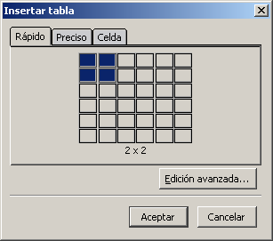
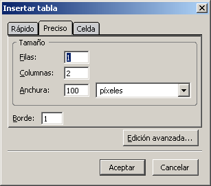
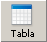
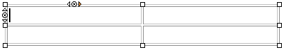

Tablas>>Crear tablas

Para empezar a trabajar con tablas lo haremos considerando unos datos que se prestan a su representación por medio de este recurso.
Necesitamos publicar en la página WEB del centro los datos de matriculación en los que vamos a incluir el número de alumnos matriculados en cada uno de los dos grupos de cada uno de los niveles de Educación Secundaria Obligatoria.
Pulsando sobre el icono 
de la
barra de herramientas o mediante el menú tabla insertar
se accede a la ventana de creación de tabla. Como puedes ver
hay dos
modos de creación: el rápido que nos
permite crear tablas de unas
dimensiones máximas de 6 filas x 6 columnas mediante un
simple
movimiento de ratón o el preciso que me permite especificar
un tamaño
mayor, así como la anchura y el borde de la tabla.
insertar
se accede a la ventana de creación de tabla. Como puedes ver
hay dos
modos de creación: el rápido que nos
permite crear tablas de unas
dimensiones máximas de 6 filas x 6 columnas mediante un
simple
movimiento de ratón o el preciso que me permite especificar
un tamaño
mayor, así como la anchura y el borde de la tabla.
Si pulsáramos sobre el botón accederíamos a una pantalla para establecer otras propiedades que se comentarán más adelante. Por el momento la sugerencia es que, en un primer momento, te limites a especificar el número de filas y columnas y el ancho que quieres adjudicarle a la tabla
Una vez que hemos tomado contacto vamos a empezar a realizar alguna práctica con las tablas.
En el siguiente vídeo se muestra una una descripción de los diversos elementos que constituyen el panel de propiedades de la tabla..
Ver animación.Si la tabla ocupa menos del 100% de la ventana y elegimos una alineación a la izquierda o a la derecha el texto fluirá por el espacio que haya quedado libre en el lado opuesto.
 Cuando
hagas alguna prueba de lo que se acaba de decir verás que
parece que no funciona cuando la tabla está alineada a la
izquierda.
Cuando
hagas alguna prueba de lo que se acaba de decir verás que
parece que no funciona cuando la tabla está alineada a la
izquierda.
El motivo es que cuando se utiliza la alineación
izquierda el programa elimina el atributo align="left">,
mientras que mantiene
correctamente align="right"
cuando se alinea a la derecha. Para corregir este pequeño
error tendrás que introducir
manualmente este atributo en la etiqueta <table>
A partir de la tabla base que hemos creado en la actividad 21 vamos a ir haciendo añadidos para completarla. Iremos comprobando a través de los siguientes ejercicios que el trabajo con tablas puede resultar ciertamente complicado debido a las características de lenguaje HTML. Por ello vamos formular un consejo esencial para trabajar rápidamente con tablas:
 Si nuestro
objetivo es lograr una tabla compleja debemos partir de un esquema
realizado en papel y, una vez creada la estructura, rellenar los datos.
Si nuestro
objetivo es lograr una tabla compleja debemos partir de un esquema
realizado en papel y, una vez creada la estructura, rellenar los datos.
Antes de pasar al siguiente ejercicio vamos a dejar constancia de cuáles son las etiquetas básicas que intervienen en la definición de una tabla.
<table>
Aquí se inicia la tabla
<tr>
Esta etiqueta indica el inicio de una fila
<td>
Entre estas etiquetas irá el contenido de la
primera celda </td>
<td>
Y aquí el de la segunda</td>
</tr>
Esta indica el fin de la primera fila.
A continuación empezaría la siguiente fila con
una nueva etiqueta <tr> y las
correspondientes a las
celdas hasta el cierre de la nueva fila con </tr>
</table> Sería la etiqueta de
cierre de la tabla
 Los
cierres de las etiquetas
Los
cierres de las etiquetas </tr>
y </td> son
opcionales según las especificaciones del W3C. Sin embargo,
el cierre de la etiqueta </table>
es obligatorio, por lo
que si en alguna ocasión modificas una tabla trabajando
directamente sobre el código ten en cuenta que la ausencia
de una etiqueta de cierre </table>
puede hacer que,
según el navegador con el que se visualice, el contenido de
la página no se muestre en pantalla.
Iremos viendo más adelante los atributos que pueden acompañar a las etiquetas, pero por el momento nos resultará suficiente lo que acabamos de ver para continuar avanzando en las prácticas.
Vamos a partir de la tabla que creamos en la actividad 22 y le añadiremos una fila por encima para agrupar los datos en Primer y Segundo Ciclo.
.Tal vez te haya llamado la atención la existencia de unos pequeños iconos que aparecen en los bordes izquierdo y superior de la celda en la que se encuentra el cursor y que modifican su color cuando el ratón pasa sobre ellos.
Su función es la de facilitar la tarea de
añadir o eliminar filas y columnas: la pulsación
sobre eliminará la
fila o
columna a la que pertenezca la celda, mientras que la
pulsación sobre las flechas
añadirá
una fila o columna en la posición que señalemos
respecto a la celda activa.
 Cuando
deseamos borrar alguna celda (no únicamente su contenido)
habrá que pulsar el botón derecho
yelegir eliminar tabla celda(s).
Cuando
deseamos borrar alguna celda (no únicamente su contenido)
habrá que pulsar el botón derecho
yelegir eliminar tabla celda(s).
Por otra parte, si al crear una tabla calculamos mal el
número de filas que necesitábamos, se puede
añadir una nueva fila si nos situamos en la celda de la
esquina inferior derecha y pulsamos la tecla 
 y se ha hecho clic lo que habremos copiado realmente es la celda
completa, por lo que al pegarla veremos que aparece una celda anidada
dentro de la celda de destino.
y se ha hecho clic lo que habremos copiado realmente es la celda
completa, por lo que al pegarla veremos que aparece una celda anidada
dentro de la celda de destino.Rowspan sirve para indicar el
número de filas que
ocupará una celda. Por ejemplo: <td
rowspan=2></td>
nos serviría para crear una celda que visualmente
sería el resultado de unir verticalmente dos celdas de la
misma columna.Colspan lo utilizamos para unir celdas
horizontalmente. Así
<td
colspan=3></td>
produciría una celda que se extendería
horizontalmente a lo largo de 3 columnas.